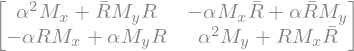

5. Linear Coupling#
5.1. Elements that induce coupling#
Both Skew quadrupole and solenoid bring linear coupling to the two transverse plane. Solenoid is wildly used in low energy injector while skew quadrupole is used for high energy applications.
5.1.1. Skew quadrupole error#
For the skew quadrupole, the field reads:
that can be derived from the vector potential:
The corresponding Hamiltonian becomes:
The Hills equation becomes:
where \(k_s=\frac{B_0 \Delta a_1}{B\rho}\) is the strenght of skew quadrupole.
Inside the skew quad, where the normal quad and dipole terms vanish, the diffential equation becomes:
By defining coupled variable \(u\) and \(v\),
the dynamics becomes decoupled.
In a thin length approximation $\(f_s=\lim_{l\to 0}\frac{1}{k_s l}\)$ The matrix of a skew quadrupole simply reads as:
Note
As we know that the skew quadrupole can be understood as the \(\pi/4\) rotation of a normal quadrupole, we can get a matrix of normal quad by
import sympy as sp
from sympy.physics.quantum import TensorProduct
fs=sp.symbols("f_s")
Msq=sp.eye(4)
Msq[1,2]=1/fs; Msq[3,0]=1/fs
rotang=sp.symbols(r"\theta")
rot2d=sp.Matrix([[sp.cos(rotang), -sp.sin(rotang)],[sp.sin(rotang), sp.cos(rotang)]])
rot4d=TensorProduct(rot2d, sp.eye(2))
rotMsq=sp.simplify(rot4d.subs(rotang, -rotang)*Msq*rot4d)
rotMsq.subs(rotang, -sp.pi/4)
---------------------------------------------------------------------------
ModuleNotFoundError Traceback (most recent call last)
Cell In[1], line 1
----> 1 import sympy as sp
2 from sympy.physics.quantum import TensorProduct
3 fs=sp.symbols("f_s")
ModuleNotFoundError: No module named 'sympy'
5.1.2. Solenoid#
For a solenoid error \(B_z\) along the z direction, the treatment for transverse fields has to be modified.
For the hard edge model of a solenoid of length \(L\), centered at \(s_0\):
Here, \(H\left(\cdot\right)\) is the Heaviside Step Function. The vector potential is
It is worthwhile to note that this approximation does not satisfy the Maxwell equation at the edge. To satisfy Maxwell equation in vacuum chamber (no currents), both \(\nabla\cdot\mathbf{B}=0\) and \(\nabla\times\mathbf{B}=0\). The vector potential must have be function of transverse coordinates \(r\), due to axial symmetric property of solenoid. Let \(\mathbf{A}=\left(-f(r^2,z)\cdot y, f(r^2,z)\cdot x, 0\right)\) then the function \(f(w,v)\) has to satisfy:
We may expand the \(f\left(r^2, z\right)\) as Taylor series of r^2 with the coeffecients as function of \(z\): $\( f\left(r^2, z\right)=\sum_{k=0}^{\infty}\frac{C_k(z)}{2(k+1)}r^{2k} \)$
with the field calculate by:
with the coefficient satisfying the iterating relation $\( C_{k+1}=-\frac{C''_k}{4(k+1)^2} \)$
Therefore, any truncation will break the requirement of Maxwell equation.
With the following approximations,
Paraxial approximation
Exact energy, i.e. The Hamiltonian gives:
Here, we have defined the normalized solenoide field
and solenoid strength \(g_s\):
Hamiltonian equation gives:
Or, we can explicitly write the equation for the particle’s transverse momentum :
A common trick of the solving (5.13) is to define a complex variable \(w=x+iy\), and its derivative with respect to \(s\): \(w' = x' + i y'\). The equation of motion becomes
The first term on the right-hand side of (5.14) indicates an oscillation of the complex variable \(w\). It hints us to separate the rotation part of the motion by defining:
Therefore:
On the other hand, from (5.14)
With trying to match Eq. (5.16) and Eq. (5.17), we can propose \(\theta(s)=-\int_{-\infty}^s g(s')ds'\) . Eq. (5.16) and Eq. (5.17) requires:
which can be simplified to
Therefore the dynamics under a solenoid field can be viewed, in an rotation frame with angle \(\theta(s)=-\int_{-\infty}^s g(s')ds'\), to be a focusing element of both directions, with strength \(g^2(s)\).
Combining the focusing effect and the rotation, we have the transfer matrix for a constant-field hard-edge solenoid with length l and solenoid rotation angle \(\theta_s=gl\):
5.2. Linear Coupling Resonance In a Ring#
5.2.1. Hamiltonian approach#
We can now combine our discussion of perturbation of linear coupling resonance on the hill’s equation with the regular linear terms. From Eq. (5.4) and Eq. (5.13)
which is derived from the Hamiltonian:
The first part is the unperturbed terms, contains the focusing from the normal quad, dipole and the focusing effect of the solenoid, the rest is the linear coupling potential.
Using Floquet transformation, the ‘coupling potential’ can be expressed by the action-angle \((J_{x/y}, \psi_{x/y})\) variable and expanded with Fourier transfromation with respect to the independent variable \(\theta=s/R\):
and similar treats applies to vertical direction.
Then inverse transformation can be used to replace the \((x,\pi_x,y,\pi_y)\) in the potential. Then, consider the potential is a periodic funtion of the independent variable \(\theta\), we can expand it as Fourier series:
Resonances |
Name |
Constant |
|---|---|---|
\(\nu_x-\nu_y=l\) |
Diff. Resonance |
\(J_x+J_y\) |
\(\nu_x+\nu_y=l\) |
Sum Resonance |
\(J_x-J_y\) |
Depend on the choice of the tune, one resonance may dominate over the other. The potential can also be approximated by the corresponding term. By changing the varible of introducing the new phase of the resonance phase, we can prove that the sum or difference of the action of two planes remains constant.
Show code cell source
from map2D import map2D
import numpy as np
import matplotlib.pyplot as plt
#from matplotlib import animation
#from IPython.display import HTML
%matplotlib widget
tunex=0.223
dtune=0.005
tuney= 1-tunex+dtune # Sum resonance
#tuney= tunex+dtune # Diff resonance
pxs=0.0015*np.arange(5)
pxps=np.zeros_like(pxs)
#pxs=0.005*np.cos(np.linspace(0,np.pi, 10))
#pxps=0.005*np.sin(np.linspace(0,np.pi, 10))
particles=np.vstack([pxs,pxps])
xpx=map2D(npart=10, twiss=[1,0], twiss_beam=[1,0], tune=tunex, chrom=0.0, espr=0.0,
particles=particles)
pys=0.002*np.ones(5)
pyps=np.zeros_like(pys)
particles=np.vstack([pys,pyps])
ypy=map2D(npart=len(pxs), twiss=[1,0], twiss_beam=[1,0],tune=tuney, chrom=0.0, espr=0.0,
particles=particles, emit=0.1e-6)
avex,avep,sizex,sizep,emit=xpx.statistics()
emitlist=[]
sizelist=[]
avelist=[]
N_turn=5000
def evolve_func(turns, kick_turn_start=0, ks=-0.01,
):
for i in range(turns):
if i>=kick_turn_start:
xpx.coor2D[1,:]+=ks*ypy.coor2D[0,:]
ypy.coor2D[1,:]+=ks*xpx.coor2D[0,:]
xpx.propagate()
ypy.propagate()
#avex,avep,sizex,sizep,emit=xpx.statistics()
#avelist.append(avex)
#sizelist.append(sizex)
#emitlist.append(emit)
yield xpx.coor2D, ypy.coor2D
evolve=evolve_func(N_turn+2)
fig,(ax, ax1)=plt.subplots(1, 2, figsize=(8,4))
ax.set_xlim([-0.01,0.01])
ax.set_ylim([-0.01,0.01])
xlist=[]
xplist=[]
ylist=[]
yplist=[]
for i in range(N_turn):
arrx, arry=next(evolve)
#if np.max(arr)>1: break
xlist.append(arrx[0])
xplist.append(arrx[1])
ylist.append(arry[0])
yplist.append(arry[1])
xarr=np.vstack(xlist)
xparr=np.vstack(xplist)
yarr=np.vstack(ylist)
yparr=np.vstack(yplist)
ax.plot(xarr,xparr,linestyle='None', marker='.', markersize=1)
ax.set_xlabel('x')
ax.set_ylabel('px')
axj=ax1.twinx()
ax1.set_xlabel('Turns')
axj.set_ylabel('Actions [mm.mrad]')
Jx=xarr*xarr+xparr*xparr
Jy=yarr*yarr+yparr*yparr
for i in range(4):
axj.plot((Jx[:,i+1]+Jy[:,i+1])*1e6)
5.2.2. Matrix approach, Edward-Teng Parametrization#
All the linear elements, dipole, quads, skew quads and solinoids can be represented by the matrix and the one turn matrix can be found by multiplying them in order. The final one-turn matrix should have a general \(4\times 4\) matrix in the block matrix form:
The symplectic matrix M has 10 free parameters since the symplectic condition provides 6 constrains which can be written as:
and
Here the notation \(\bar{A}\) of matrix \(A\) is the symplectic conjugate \(-SA^TS\). Note that the relations in Eq. (5.28) are not independent and only contribute 3 constrains besides the constrains from the determinants.
There are multiple ways to analyze the one-turn matrix. Among them, the Edward-Teng parametrization provides a clear physical interpretation. In this approach, a similarity transformation found from couple Matrix \(M\) to an uncoupled matrix:
where \(U\) is a symplectic matrix.
Out of the 10 free parameter in coupled matrix \(M\), the decoupled matrix \(M_x\) and \(M_y\) contributes 6 free parameter, therefore the simplest form of transformation \(U\) need to have 4 free parameters. Let \(U\) have the following form:
where a real positive parameter \(\alpha\) and a matrix \(R\) is to be determined. This form satisfies the relations (5.27) and (5.28) automatically. The constrain from third Eq. in (5.27) requires
import sympy
sympy.init_printing(use_unicode=True)
alpha=sympy.symbols(r"\alpha")
a=sympy.MatrixSymbol('A', 2,2)
b=sympy.MatrixSymbol('B', 2,2)
c=sympy.MatrixSymbol('C', 2,2)
d=sympy.MatrixSymbol('D', 2,2)
mx=sympy.MatrixSymbol('M_x', 2,2)
my=sympy.MatrixSymbol('M_y', 2,2)
r=sympy.MatrixSymbol('R', 2,2)
rc=sympy.MatrixSymbol(r'\bar{R}', 2,2)
s_2=sympy.MatrixSymbol('S_2', 2,2)
zero=sympy.ZeroMatrix(2,2)
identity=sympy.Identity(2)
Mcouple=sympy.BlockMatrix([[a,b],[c,d]])
Mdecouple=sympy.BlockMatrix([[mx,zero],[zero,my]])
#sympy.block_collapse(M*ss*M.T)
U=sympy.BlockMatrix([[alpha*identity,-rc],[r,alpha*identity]])
Uinv=sympy.BlockMatrix([[alpha*identity,rc],[-r,alpha*identity]])
sympy.block_collapse(Uinv*Mdecouple*U)

Therefore, the relation (5.29) yields:
From the relation for \(B\) and \(C\), we reach:
On the other hand, the uncoupled matrix \(M_x\) can be calculated from the relation of \(A\) and \(C\), while \(M_y\) can be calculated from the relation of \(B\) and \(D\):
Then back to the relation of \(A\) and \(D\) and using \(BR=\bar{R}C\), we have
Now we have to guess the form of \(R\). Using the relation of the equal determinant of \(B\) and \(C\), a smart solution of \(R\) can be:
where \(\kappa\) is a real parameter to be determined. Here we have assumed \(\bar{B}+C\ne0\), otherwise, \(R\) becomes zero, which is not the desired solution when \(B\) and \(C\) are non zero.
The relation (5.31) becomes:
The uncoupled matrix \(M_x\) can be written as:
Using the solution of \(R\) (Eq. (5.36) ), the equation Eq. (5.35) becomes:
Combining Eq. (5.37) and Eq. (5.37), we can get the equation for the ratio \(\kappa/\alpha\). After defining two new parameters:
We can solve \(\kappa/\alpha\) from:
To have a real solution, we demand \(\Delta\equiv\lambda^2+\xi \ge 0\) and get the solution:
Both solutions are valid.
To ensure the coupled one-turn map is stable, we are interested in the trace of \(M_x\) and \(M_y\).
Therefore we also get the stablity of 4D matrix in block form:
Here is a example using FODO cell, with one quad rotating clockwise while the other quad rotate counterclockwise by same angle. Will the FODO lattice remain stable?
import sympy as sp
from sympy.physics.quantum import TensorProduct
import numpy as np
def smat(dim=2):
s2=sp.Matrix([[0,1],[-1,0]])
if dim==2:
return s2
return TensorProduct(sp.eye(dim//2), s2)
def quad4d(fx, rotang=None):
Mq=sp.eye(4)
f=sp.symbols("f")
Mq[1,0]=1/f; Mq[3,2]=-1/f
Mq=Mq.subs(f,fx)
rang=sp.symbols(r"\theta")
if rotang is not None:
rot2d=sp.Matrix([[sp.cos(rang), -sp.sin(rang)],[sp.sin(rang), sp.cos(rang)]])
rot4d=TensorProduct(rot2d, sp.eye(2))
return sp.simplify(rot4d.subs(rang, -rotang)*Mq*rot4d.subs(rang, rotang))
return Mq
def drift4d(l_drift):
Md=sp.eye(4)
l=sp.symbols("l")
Md[0,1]=l; Md[2,3]=l
return Md.subs(l, l_drift)
def symp_conj_2by2(m):
return sp.Matrix([[m[1,1], -m[0,1]],
[-m[1,0], m[0,0]]
])
def np_symp_conj_2by2(m):
return np.array([[m[1,1], -m[0,1]],
[-m[1,0], m[0,0]]
])
f=sp.symbols("f")
l=sp.symbols("l")
l=f
rotang=sp.symbols(r"\theta")
s4=smat(4)
FODO_rot=(quad4d(-2*f, rotang)*drift4d(l)*quad4d(f,-rotang)*drift4d(l)*quad4d(-2*f, rotang))
#FODO_rot=(drift4d(l)*quad4d(f,0*sp.pi/4+rotang)*drift4d(l)*quad4d(-f, 0*sp.pi/4+rotang))
FODO_rot=sp.simplify(FODO_rot.subs(rotang, sp.pi/6))
FODO_rot
A=FODO_rot[0:2,0:2]
C=FODO_rot[2:,0:2]
B=FODO_rot[0:2,2:]
D=FODO_rot[2:,2:]
bbarc=symp_conj_2by2(B)+C
display(sp.simplify(bbarc))
display(sp.simplify(symp_conj_2by2(A)-D))
xi=sp.simplify(2*B.det()+sp.trace(B*C))
lbd=sp.simplify((sp.trace(A)-sp.trace(D))/2)
delta=(lbd*lbd+xi)
display(sp.simplify(delta))
display(B.det(), xi)
k_ov_alpha=(lbd-sp.sqrt(delta))/xi
display(k_ov_alpha)
#M_x=A-k_ov_alpha*(B.det()*sp.eye(2)+B*C)
#M_y=D-k_ov_alpha*(B.det()*sp.eye(2)+C*B)
#trm1=(sp.trace(A)+sp.trace(D))/2+sp.sqrt(delta)
#trm2=(sp.trace(A)+sp.trace(D))/2-sp.sqrt(delta)
#display(sp.simplify(trm1))
#display(sp.simplify(trm2))
#display(sp.simplify(M_x[0,1]))
#display(sp.simplify(M_y[0,1]))
# import numpy as np
# import matplotlib.pyplot as plt
# ftrm1=sp.lambdify(rotang, trm1)
# ftrm2=sp.lambdify(rotang, trm2)
# ang=np.linspace(0,np.pi, 100)
# tracex=ftrm1(ang)
# tracey=ftrm2(ang)
# fig,ax=plt.subplots()
# ax.plot(ang, tracex, label=r'Trace of $M_x$')
# ax.plot(ang, tracey, label=r'Trace of $M_y$')
# plt.xticks(np.linspace(0, np.pi, 5), ['0','π/4','π/2','3π/4','π'])
# ax.axhline(2, ls='--', color='k',alpha=0.5, )
# ax.axhline(-2, ls='--', color='k',alpha=0.5,)
# ax.set_xlabel("Rotation Angle")
# ax.set_ylabel("Trace")
# ax.legend(loc='best')